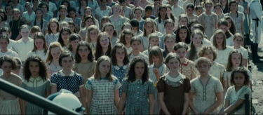
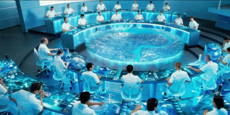

« Puis sont venus les jours
obscurs, le soulèvement
des Districts contre le
Capitole. Douze ont été
vaincus, le treizième a été
éliminé. »
L’apparence dictatoriale
Le jour de la Moisson, le Districts 12
s’apparente à un camp de concentration.
Les habitants se déplacent avec
obligation et peur. Ils doivent
s’enregistrer un par un avant d’attendre
le tirage au sort. L’espoir de ne pas
entendre son nom est dans l’esprit de
tout le monde.

Foule attendant les résultats du tirage au sort
Avant ce tirage, un film est diffusé à la
vue de tous par le Capitole. Il se
rapproche grandement des films de
propagandes nazis ou Nord-Coréens. Il
affirme la paix et qualifie les jeux d’une
“épreuve exigeant honneur, courage et
sacrifice”.
Les maîtres du jeu
Pendant les jeux, des “maîtres du jeu”
ont le contrôle sur la partie. L’ensemble
de la population est dans l’obligation de
regarder la rediffusion des jeux. Vers la
fin, ceux-ci ajoutent dans l’arène de
féroces bêtes. Ces bêtes sont créées
génétiquement et ont pour but
d’accélérer la fin de la partie.

Salle de contrôle des jeux
Le Président Snow explique qu’il ne croit
pas en les perdants. C’est ainsi qu’il
qualifie les Districts 10, 11 et 12. Il sait
qu’ils sont utiles grâce à leurs
productions mais il ne les soutient pas.